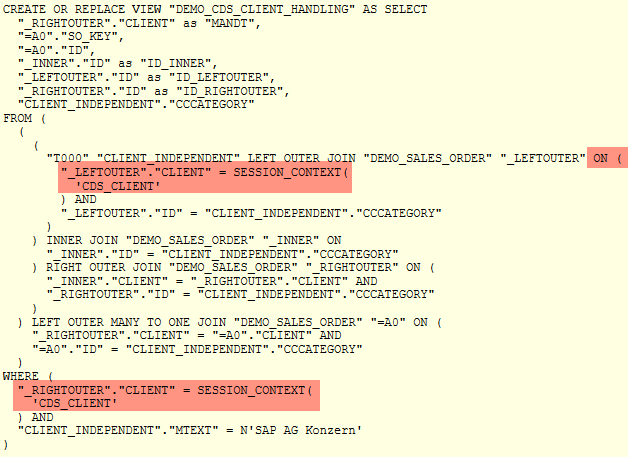

AS ABAP Release 755, ©Copyright 2026 SAP SE. All rights reserved.
ABAP - Keyword Documentation → ABAP - Core Data Services (ABAP CDS) → ABAP CDS - Data Definitions → ABAP CDS - DDL for Data Definitions → ABAP CDS - CDS Entities → ABAP CDS - View Entities →ABAP CDS - Client Handling in CDS View Entities
For a CDS view entity, client handling is done implicitly and automatically by filtering the client session variable $session.client.
You cannot manipulate this. Client handling annotations are not available.
Determining Client Dependency
The client dependency of a view is determined by the data sources used:
Determining Client Handling
If a CDS view entity is client-dependent, then the client handling is performed by filtering the client session variable $session.client. The session variable algorithm expands the joins of the view entity implicitly as shown in the following table. This applies to joins specified explicitly using JOIN, as well as to instances of joins created when using SQL path expressions.
| Left Side | Right Side | INNER JOIN | LEFT OUTER JOIN | RIGHT OUTER JOIN | CROSS JOIN |
| Client-dependent | Client-dependent | Compares the client columns in the ON condition | Compares the client columns in the ON condition | Compares the client columns in the ON condition | Transforms the cross join to an inner join using an ON condition for the client columns |
| Client-independent | Client-dependent | - | Compares the client column with the value of the session variable $session.client in the ON condition | - | - |
| Client-dependent | Client-independent | - | - | Compares the client column with the value of the session variable $session.client in the ON condition | - |
| Client-independent | Client-independent | - | - | - | - |
In addition, when client-dependent database tables are accessed, WHERE-clauses with comparisons of the client columns with the session variable $session.client are added to the view implicitly. If only client-dependent CDS entities are accessed, however, no clauses are added.
It is not possible to access the data of different clients in a single read.
The addition USING of the statement SELECT for switching implicit client handling is not allowed for CDS view entities. The obsolete addition CLIENT SPECIFIED is not allowed either.
Example
The following CDS view entity DEMO_CDS_CLIENT_HANDLING defines different kinds of joins (left outer join, inner join, and right outer join) between a client-independent database table (T000) and a client-dependent database table (DEMO_SALES_ORDER). It also defines and uses an association between the same client-independent database table (T000) and the same client-dependent database table (DEMO_SALES_ORDER).
SQL statement created on the database:
The image below shows the SQL statement that is generated on the SAP HANA database. For the left outer join, an ON condition is added that compares the client field of the database table DEMO_SALES_ORDER with the current client. The current client is determined using the built-in SAP HANA function SESSION_CONTEXT ('CDS_CLIENT'), which is the equivalent to the session variable $session.client in ABAP CDS. In the same way, a WHERE clause is added that compares the client of the database table with the current client.

Properties of Client-Dependent CDS View Entities
Since client handling is performed completely implicitly in CDS view entities, a client field is not allowed in the SELECT list of a view entity. The result set of an ABAP SQL read on a CDS view entity can never contain a client column either.
Hints